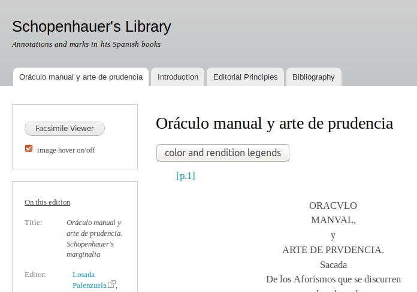

Diffondere la
ricerca online
Codificare, Analizzare, Diffondere: Le Digital Humanities nei progetti di ricerca
Verona, 16-19 luglio 2019
1. Componenti di un progetto digitale


2. Client-server model
- Navigatore (browser). Programma che permette di consultare pagine web, per esempio: Firefox, Chrome, Safari, Opera, Edge, etc.
- URL. Uniform Resource Locator, indirizzo. Permette di localizzare una risorsa nel web, per esempio: https://cadottorato.github.io/sito
URL
https://www.unil.ch/clsr/home.html
protocollo dominio percorso

3. Siti web e
HTML (HyperText Markup Language)
- Alexandre Niveau, HTML : la base du web, CC BY-NC-SA 4.0
- w3schools.com, HTML5 Tutorial
SGML (Standard Generalized Markup Langage) - ISO 8879:1986
La struttura è codificata attraverso dei tags inseriti nel documento.
La resa grafica è definita in un documento esterno, chiamato foglio di stile (stylesheet).
HTML (HyperText Markup Language)
- XML : una versione semplificata ed estensibile di SGML per gestire i dati
- HTML : successore di SGML, linguaggio di markup per il web (incluso l'ipertesto)
- HTML5 : l'ultima versione di HTML

Prologo e radice
HTML5 : DOCTYPE e radice
<!DOCTYPE html>
<html lang="it">
Elemento head
<head>
<title>Titolo del documento<title>
<meta charset="UTF-8" />
<meta name="keywords" content="corso, HTML" />
<link rel="stylesheet" media="screen" href="diapos.css" />
</head>
- il titolo della pagina
- la dichiarazione della codifica dei caratteri
- i metadati (descrittivi, giuridici)
- i fogli di stile CSS
- gli script (non per forza)
Il corpo del documento: elemento body
<body>
<h2>Titolo di una sezione</h2>
<p class="intro">Ecco il testo del paragrafo
introduttivo.</p>
<p>Testo e ancora testo: può essere utile
<em>mettere in evidenza qualcosa</em>,
ma non sempre. </p>
</body>
Spazi bianchi in HTML
- Tanti spazi di qualsiasi tipo (spazio, a capo, tab, etc.) uno dopo l'altro di seguito sono interpretati dal navigatore come un solo spazio
- Per fare degli a capo forzati nel mezzo di un testo, usiamo
<br/>(break) - Ma attenzione ! È raro avere bisogno del tag
<br/>, l'utilizzo dei paragrafi generalmente è abbastanza e produce un codice più pulito.
Elementi block e inline
- Elementi di tipo block: strutturano il contenuto. Di default cominciano su una nuova linea.
Titoli:<h1>...</h1> , <h2>...</h2>
Paragrafi:<p>...</p>
Separatori:<hr />
Liste:<ul> et <ol>, qui contiennent des items de liste <li>
Divisioni generiche:<div>...</div>
Elementi block e inline
Elementi di tipo inline : sono all'interno del flusso di testo.
Immagine:<img src="maphoto.jpg" alt="ma photo" /><a href="http://www.w3.org">hypertexte</a><br />il <span>testo nello span</span> è questoCommento
<!-- Ceci est un commentaire | Questo è un commento.
Questa parte del codice non è letta dal navigatore.
Si usa per aggiungere spiegazioni sul codice o
prendere appunti -->
Qualche risorsa online
che non sono sempre facili) :
- Mozilla Developer Network (MDN)
- w3schools (con esempi interattivi)
Esercizio
- Creare una cartella dove metteremo tutti i materiali di questo corso. Attenzione: niente spazi nei nomi delle cartelle e dei file!
- Scaricare la cartella zip 'esercizioHTML'
- Un-zip
- Aprire il file
index.htmlin oXygen - Seguire le istruzioni nei due ultimi commenti. In questo file potete anche creare i vostri commenti dove volete.
Attenzione : potete usare altri editori al posto di oXygen, come Sublime Editor, Notepad++, Wrangler, etc. Questi editori però "non capiscono" la TEI, quindi vi aiuteranno di meno.
5. CSS
Fonti :
- Alexandre Niveau, Introduction à CSS, CC BY-NC-SA 4.0
- w3schools.com, CSS Tutorial
CSS (cascading style sheets)
Separazione del contenuto (HTML) e della presentazione (CSS).
CSS permette di formattare, impaginare, gestire il layout, i colori, etc.
Attributo @style
<h1 style="color:red; font-style:italic;">Mon titre</h1>
Contiene una o più coppie proprietà-valore,
separate da punti e virgola
(qui color:red e font-style:italic)
- il valore
redper la proprietàcolor - il valore
italicper la proprietàfont-style
Risultato: il titolo sarà rosso in corsivo.
Fogli di stile esterni

<link rel="stylesheet" href="mon_style.css" />Cascata
Priorità degli stili :
- browser default
- stili esterni definiti nel foglio di stile esterno CSS
- stili inline definiti con l'attributo @style sugli elementi
Commenti
/* Questo è un commento.
Questa parte del codice non è letta dal browser.
Si può sare per appunti e spiegazioni */
Qualche prioprietà CSS
Ci sono tante proprietà CSS (una lista qui). Per esempio:
color, colore del testo (ex.color: blue)background-color, colore del fondo (ex.background-color: black)font-family, font (ex.font-family: Verdana)font-size, dimensione dei caratteri (ex.font-size: 120%)font-style, stile dei caratteri (ex.font-style: italic)border, bordi intorno all'elemento (ex.border: 1px solid black)text-align, allineamento del testo (ex.text-align: center)text-decoration, decorazione del testo (ex.text-decoration: underline)
Modello delle scatole
Il browser rappresenta ogni elemento come una scatola.
- La scatola degli elementi di tipo blocco (
<div>,<p>,<h1>) comincia su una nuova linea e prende tutta la larghezza disponibile. - La scatola degli elementi di tipo inline (
<strong>,<img>,<a>) si comporta come una parola nel flusso del testo e la sua larghezza dipende dal suo contenuto.
Possiamo cambiare la proprietà display con CSS
Colori degli elementi
- Proprietà
color: colore del testo - Proprietà
background-color: colore dell'evidenziazione
Padding vs margin
(inspect element)
Esercizio
- Download la cartella 'css' et unzip
- Aggiungere al file 'index.html' questa linea alla fine di
head(nelhead, non dopo !)
- Aprire il file 'site.css' in oXygen e seguire le istruzioni nel commento.
XSLT
Extensible Stylesheet Language TransformationsLinguaggio di programmazione che permette di trasformare un documento XML (incluso XML/TEI) in un altro documento (XML, HTML, CSV, etc.)
Soluzioni "prêts-à-porter" per la pubblicazione di documenti XML/TEI
- Fogli di trasformazione in oXygen o OxGarage. XSLT
- TEI Boilerplate. XSLT, JavaScript, CSS
- CETEIcean. JavaScript, CSS
- TEI Publisher Toolbox. eXist database
Content Management System (CMS)
Sistema di gestione dei contenutiUn CMS gestisce la creazione e modifica di dati digitali.
Un CMS Web serve a gestire delle pagine web e permette di creare dei siti senza vedere troppo codice.
Esempi : Wordpress, Drupal, Joomla, Omeka
 Wordpress. Visual editor
Wordpress. Visual editor

Wordpress. Text editor

 Drupal. Esempi di edizioni digitali
Drupal. Esempi di edizioni digitali

|

|

|
 |
 Omeka
Omeka
"open-source web publishing platforms
for sharing digital collections and
creating media-rich online exhibits"

Cuenca EL, Kowaleski M. (2018) "Omeka and Other Digital Platforms for Undergraduate Research Projects on the Middle Ages", Digital Medievalist. Vol. 11 Issue:1/3. DOI: http://doi.org/10.16995/dm.69
Rath L., (2016) "Omeka.net as a librarian-led digital humanities meeting place", New Library World, Vol. 117 Issue: 3/4, pp.158-172. DOI: https://doi.org/10.1108/NLW-09-2015-0070
Marsh A (2013) "Omeka in the classroom: The challenges of teaching material culture in a digital world", Literary and Linguistic Computing, Vol. 28 Issue: 2/1, pp.279–282. DOI: https://doi.org/10.1093/llc/fqs068
per i dati di ricerca
- deposito per il codice
- gestione di versioni (versioning)
- hosting
... Github, Gitlab, SourceForge ...

GITHUB
- Sviluppo di Zenodo : github.com/Zenodo/zenodo
- Sviluppo di Stylo : github.com/computationalstylistics/stylo
- Sito web della formazione CAD : github.com/CADottorato/sito (source) | cadottorato.github.io/sito/ (site)
- Sito web personale : github.com/elespdn/elespdn.github.io (source) | elespdn.github.io/io/ (site)
- deposito sicuro
- identificanti duraturi (possibilità di citare e gestire la proprietà intellettuale
- gestione dei diritti
... HAL, Zenodo, Nakala ...
DOI (Digital Object Identifier)
- identificante duraturo digitale di una risorsa
- International DOI Foundation (not-for-profit, member-based, organisation initiated by several publishing trade associations), 1998
- ISO 26324, 2012-2017
- Example. DOI: 10.18716/ride.a.2.5


Esercizio
- Script R (linguaggio di programmazione) per la creazione di una carta
→ Github - Report di un progetto in corso
→ HAL, Zenodo - File XML/TEI di edizione di un testo
→ Zenodo. Exemple : Bérardier de Bataut, Essai sur le récit [DOI 10.5281/zenodo.1098439]
→ Github. Exemple : Faustedition [github.com/faustedition/faust-xml] - Dati per catalogo di edizioni digitali
→ Github. Exemple : Catalogue Digital Editions [github.com/gfranzini/digEds_cat]
→ Zenodo. Exemple : Catalogue Digital Editions [DOI 10.5281/zenodo.1161425] - Pre-print articolo scientifico
→ HAL, Zenodo
open science
- verificare i risultati ottenuti, potenzialmente aumentare la qualità della ricerca
- riusare per scoprire attraverso studi comparativi, data mining, etc.
- ridurre i costi della raccolta dati
- Creative Commons website
- Open Data Commons website
- Science Europe, Practical guide to the international alignment of Research Data Management, @en
- Github + Open Source Guides, The legal side of open source, @en (mainly for code)
- Digital Curation Centre and JISC Legal, How to License Research Data, @en (it concentrates on the UK context, but many aspects apply internationally)
- Open Knowledge Italia
- Espace chercheurs, Données de la recherche, contexte juridique, @fr
"Diffondere la ricerca online", CAD - Le Digital Humanities nei progetti di dottorato (Verona, 16-19 luglio 2019)

{kind=link}
?
Créez votre site web !